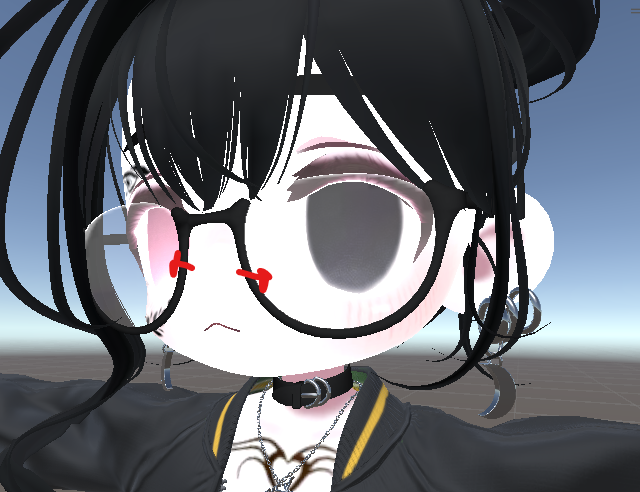
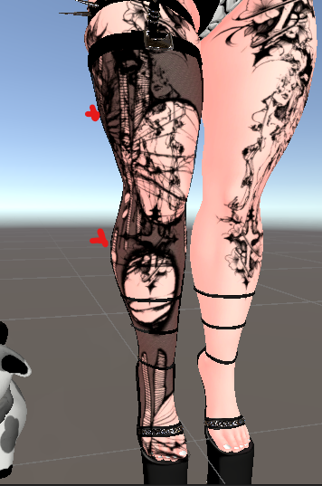
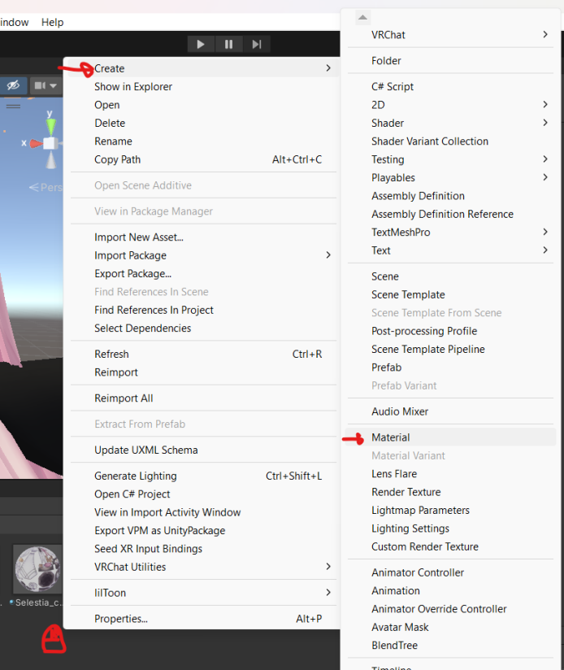
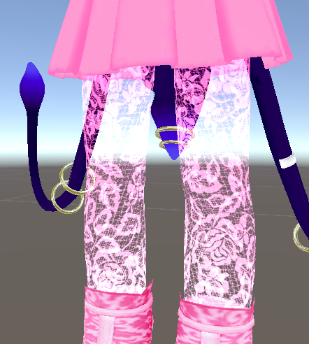
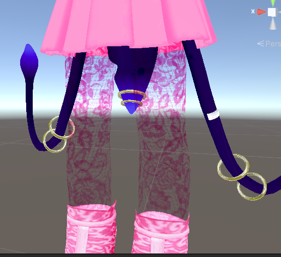
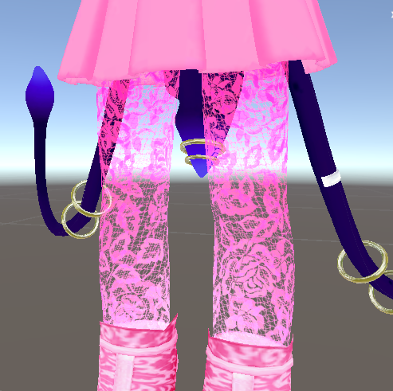

You can have additve or multiplicative transparency on quest using the particle shaders. VRChat > Mobile > Particles > Additive and VRChat > Mobile > Particles > Multiply both woth for quest. Alpha blend is in the same folder, but does not work on Quest avatars
Additive removes dark values, and multiply removes light values. Depending on the colors on the texture, you can decide which shader is right for each transparent section on your avatar.

Additive

Multiply
Currently, there is a bug with the particle shaders where a duplicated and converted PC material might hold some invisible tags that prevents transparent rendering on that material. To make sure your materials are transparent on quest, simply create a fresh material whenever you expect to use transparancy, rather than duplicating the PC material to edit. The fresh material should not have any opaque tags hidden on it, so the transparancy of the particle shaders will render properly on quest.

There is a trick to creating an alpha blend effect on quest. It requires you to layer both additive and multiply of the same texture on the mesh. You can do this multiply ways. One way is to add a material slot to the mesh. This works when there is only one material slot, or the material slot that needs transparency is the last slot. Adding a material slot with the + icon will add a mateiral covering the bounds of the material on the last slot.
If the last material slot is not the one needing to be transparent, another way to get another layer is to duplicate the mesh. This is not optimal for high-poly meshes. If you can do some work in blender, you can duplicate the mesh only on the transparent parts by selecting by material in edit mode.



additive
multiply
both